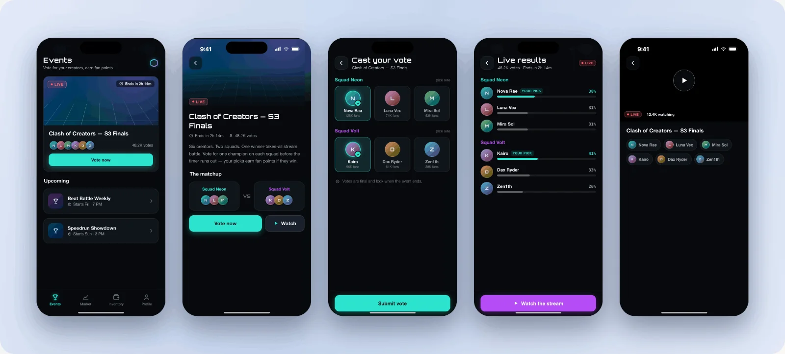
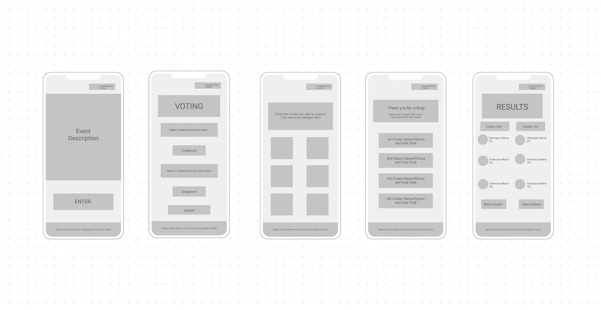
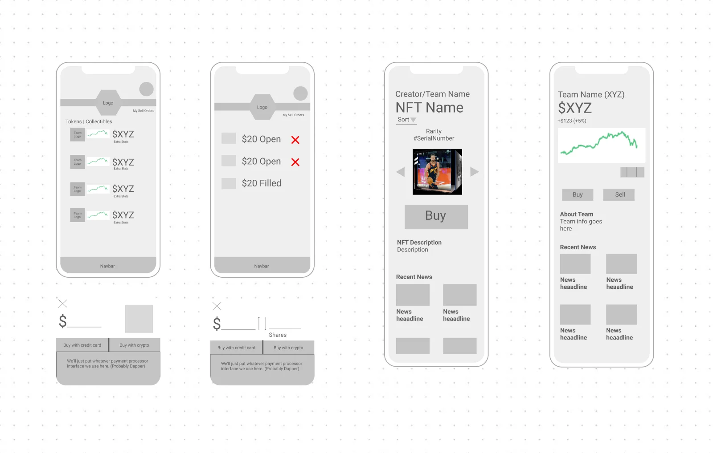

Matrix connects fans with creators through rewards and gamified engagement. Working directly with the CEO, I turned product specs and the brand's existing style guide into high-fidelity screens for a waiting dev team — eleven screens across two feature areas, in a week.
CLIENTMatrix · startup
ROLEUI designer · solo
TIMELINE1 week · [ADD: year]
TOOLSFigma
The briefSomeone else's product spec, someone else's style guide (dark surfaces, neon accents), two feature areas: events & voting and tokens & NFTs. Lo-fi → team review → pixel-final, twice over, in seven days.
My partAll of the design — wireframes through hi-fi — reviewed by the CEO and team. Screen content uses fictional creators and sample data.
StatusHanded off[ADD: what the dev team built / shipped, or that the trail ends at handoff]

THE ENGAGEMENTSPEC → HANDOFF
1 wk
FROM SPECS TO DEV HANDOFF
2
FEATURE AREAS
11
HI-FI SCREENS DELIVERED
OVERVIEW
Unlike my zero-to-one projects, Matrix was disciplined execution: a fixed spec, a fixed style guide, a real dev team waiting. The interesting design work happened in the gap between what the spec asked for and what would actually be pleasant to use — the voting flow below is the clearest example.
FEATURE 01 EVENTS & VOTING
Fans browse live events and vote for creators. From the spec I drew lo-fi wireframes, pressure-tested them with the CEO and team, then produced the hi-fi screens:

Lo-fiStraight from the spec — note the dropdown champion pickers, and the annotations for a nav swap and EN/VN language toggle.The decision that mattersThe spec's dropdown champion pickers became tappable creator cards with fan counts — voting should feel like picking a fighter, not filling in a form. That change survived CEO review into the handoff.
Two spec behaviors — the navbar swapping Market for Tournament during live events, and a per-screen language toggle — are specified in the lo-fi annotations but didn't make this hi-fi pass. [ADD: why — deferred by the team? picked up in a later sprint? Honest deferral reads better than the boards contradicting the copy]
FEATURE 02 TOKENS & NFTS
Fans buy and sell creator tokens and collectibles. Same rhythm — lo-fi with the team, then hi-fi:
Market — prices and trading for tokens and collectibles
Orders — filled and open orders in one list, one-tap cancel for open ones
Detail pages — per-creator token and NFT views with price history and buy/sell flows
Checkout — card or crypto, designed to survive whichever payment processor the team picked

Lo-fiThe market's information density was the hard part — price, trend, and ownership state per row without a table's coldness.Hi-fiSparklines and signed percentages carry the trend reading; the neon accent is rationed to prices and actions so the dark UI stays scannable.
WHAT “BUILD-READY” MEANT HERE
Consistent components, real spacing tokens from the style guide, and flows the team could implement without guessing at intent. Honest limits of a one-week pass:
The boards show happy paths — loading, empty, and error states weren't in scope for the week. [ADD: if states were documented in the Figma file, say so and show one]
Device chrome is inconsistent across two boards (some screens carry full iOS status bars, some don't) — a re-export I'd do before showing this to a detail-oriented dev team again.
Working in someone else's neon-on-dark palette meant inheriting its contrast choices; small grey metadata text on near-black is the pairing I'd challenge first if the engagement had a week two.
STATUS & WHAT I TOOK AWAY
A fixed spec and a fixed style guide don't remove design judgment — they concentrate it into small calls, like turning a dropdown into a card.
Executing in someone else's systemstyle-guide fluency